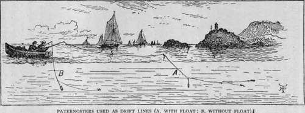
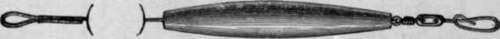
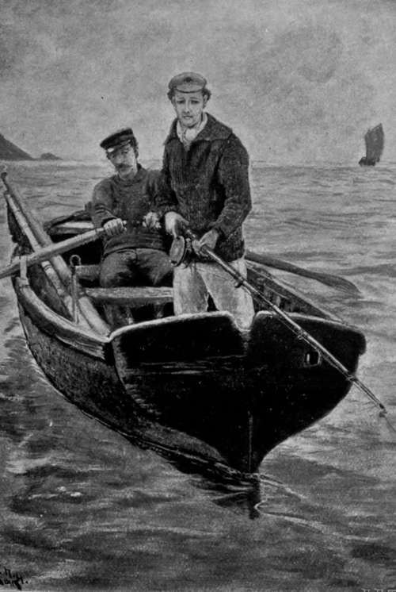

Sea Fishing From Small Boats. Part 9
Description
This section is from the book "Sea Fishing", by John Bickerdyke. Also available from Amazon: Sea Fishing.
Sea Fishing From Small Boats. Part 9
One great advantage of the float is that by simply letting off line from the reel one can fish at various distances from the boat, and cover much more water than with the hand lines which I have described. The result of letting out the hand line is that the bait swims at lower depths, until finally it reaches the bottom. With the float tackle, on the other hand, the same depth can be maintained at any distance from the boat from one up to a hundred yards, or even more if there is abundance of line on the reel.
In this, as in all other methods of fishing, the man who does not meet with success should do his best to discover the cause of his failure. His bait may be too deep or too near the surface, or the lead may be too heavy or too light. I regret it is impossible to convey in a book that faculty of correct judgment which can only be obtained by long experience and practice.
In the accompanying illustration I have shown how the drift paternoster appears in the water, both with and with out a float.
I have suggested a modified paternoster for this particular purpose, because I want to keep the tackle as simple and free from complications as possible ; but I should certainly regard the pipe lead placed at the end of the line, with a swivel below it, and then three or four yards of gut, single, double, or treble (according to the size of the fish sought), as rather more suitable, though I doubt if an extra fish would be caught by its use.
The most usual baits for this method of fishing are live sand-eels, live rag-worms, and live shrimps. Dead baits will also kill fish, but not nearly so well, and of these the best arc-dead sand-eels and strips of squid, mackerel or bass skin. If the bait is dead the fisherman should give a lively motion to it by frequently jerking his line. The principal fish caught are pollack, coalfish, bass, mackerel, and garfish.
Pipe Lead With Hook Swivel.
This completes all I propose to say here respecting fishing from a boat which is moored and as stationary as the motion of the waves will allow it to be. When we come to deal with the various kinds of fish, any special tackle and methods which are incidental to their capture will be described.
From a boat in motion, if we except casting the fly or bait or drifting with the tide, there is only one method of fishing —railing or whiffing, which is very similar to what is known on the Irish lakes as trolling, and in the South of England, and particularly on the Thames, as trailing. There is this difference, however—that on the sea it is not nearly so necessary to use a bait which spins as in fresh water.
The first point which the would-be trailer, railer, whiffer, or troller, as he may like to call himself, should most thoroughly appreciate is that the size or weight of the lead should depend on three things : (1) the speed of the boat ; (2) the depth at which the fish are to be found ; and (3) the size of the running line ; for if the line be coarse it will require a heavier lead to sink it than if it be fine. Of these three things the first is the most important. If we are on a yacht doing about seven knots an hour, it is necessary to have a lead of two, three, or even more pounds in weight. But in a small boat which travels slowly a two-ounce lead will often suffice. Use that lead from a yacht, and the bait will be skipping along the surface of the water most of the time. Another factor to be taken into consideration is the length of line let out behind the boat. Often when unprovided with sufficiently heavy leads I have, by simply unreeling twenty or thirty extra yards of line, sunk the bait to a proper depth. The foregoing are just those elementary principles which should be understood at the outset.
'We Can Abjure The Professional Gear'.
With regard to mackerel fishing from a small rowing boat, the same number of fish are not likely to be caught as from a sailing vessel, because twice as much water will probably be covered in the course of the day by the faster craft. Indeed it often happens that the mackerel will not take the bait unless it is drawn through the water faster than can be managed with a rowing boat, and I fancy that the splash of the oars has a tendency to frighten them.
For small-boat fishing we can abjure the professional gear and use much the same sort of tackle as would find favour with a salmon harler on Loch Tay or the trailer for Thames pike ; I should, perhaps, say which ' used' to find favour with the Thames trailer, for this method of fishing has now been entirely abolished on the river. But though ordinary spinning or trailing tackle suffices, for reasons which are not quite clear to me I have always found it best in the sea to use a much longer line (i.e. snood) below the lead than seems to be required in fresh water.
Continue to:
- prev: Sea Fishing From Small Boats. Part 8
- Table of Contents
- next: Sea Fishing From Small Boats. Part 10
Tags
fishing, hooks, bait, fishermen, spanish mackerel, mackerel fishing